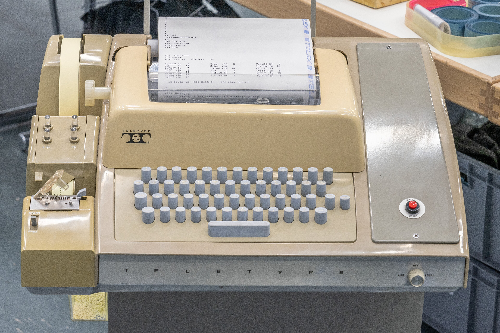
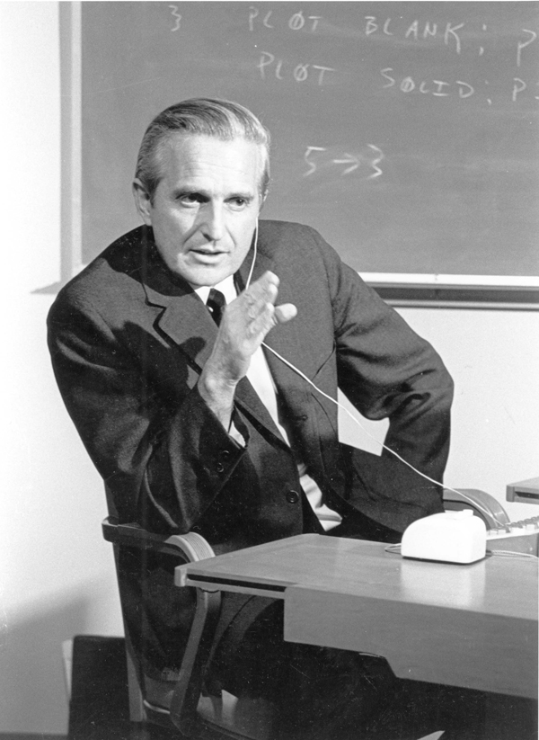
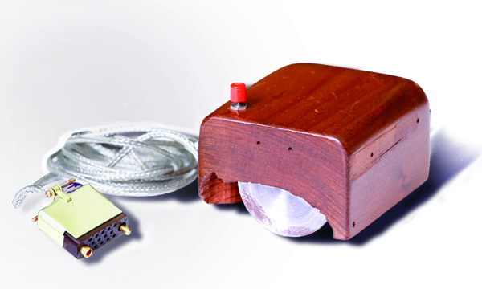
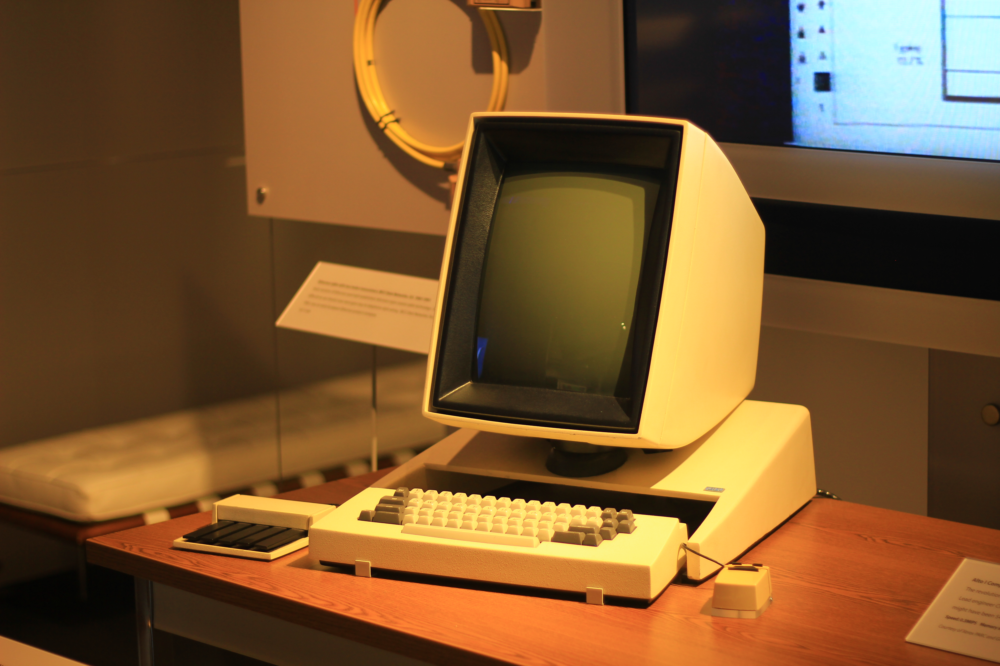
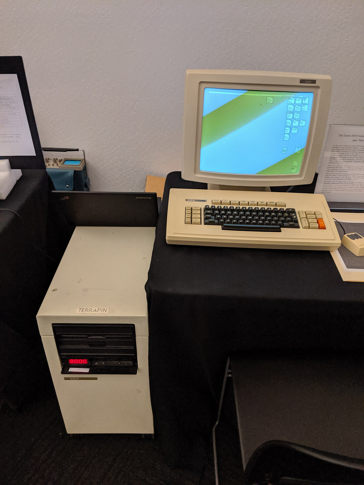
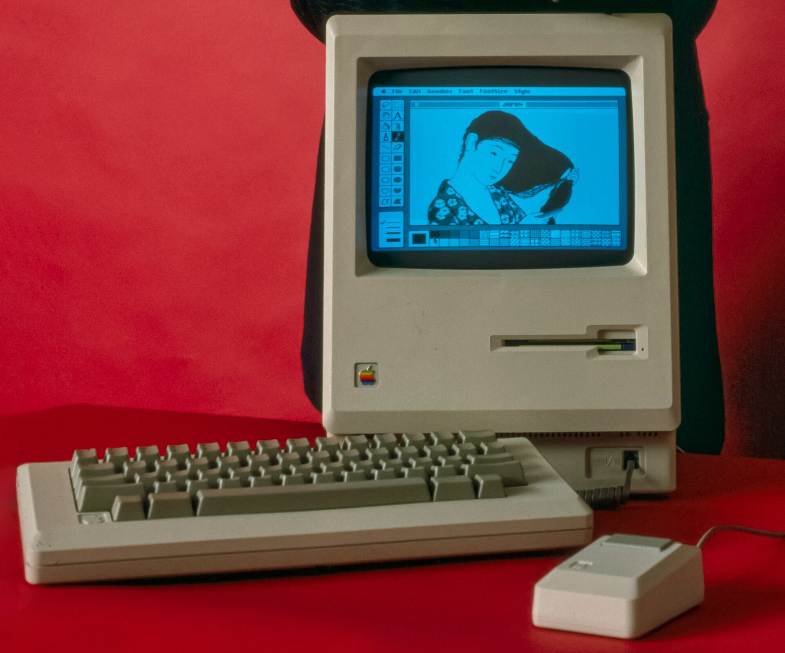
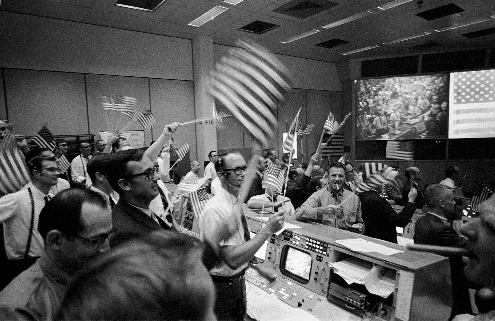
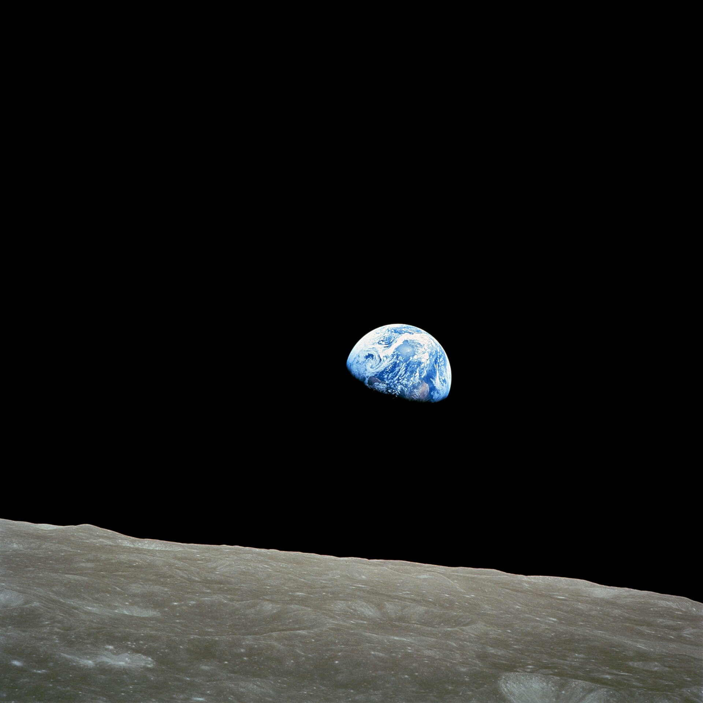

Designingfor ImperfectIntelligence
Desde dónde hablo
Para quien
usa la IA.
Cuando algo falla, lo primero que ve la persona es la pantalla.

Foto: PantheraLeo1359531, CC BY 4.0
Capítulo 1: Historia de la interfaz
Ya hemos
estado aquí.
Hubo un tiempo en que hablar con un ordenador era teclear órdenes en una máquina como esta.
Foto: PantheraLeo1359531, CC BY 4.0
> LIST FILES
Teletype Model 33, 1963
9 dic 1968, San Francisco
1968
La madre de
todas las demos.
Un ratón, ventanas, hipertexto y dos personas editando el mismo documento a distancia.

Foto: SRI International, CC BY-SA 3.0
Foto: SRI International, CC BY-SA 3.0
De la terminal a la ventana
De la demo al Macintosh pasaron dieciséis años.
1973

Foto: Michael Hicks, CC BY 2.01981

Foto: vonguard, CC BY-SA 2.01984

Foto: Bernard Gotfryd, Library of Congress
Mi madre
podía usarlo.
Con práctica.
Tres maneras de hablar con una máquina
LotesDesde 1945Le dejas el trabajo y vuelves a por el resultado.
ComandosDesde 1964Le dices cómo hacerlo paso a paso, primero tecleando y después con el ratón.
IntenciónAhoraLe dices qué quieres y ella decide cómo hacerlo.
Esta vez nos toca a nosotros.
 Foto: U.S. Army, dominio público
Foto: U.S. Army, dominio público
Capítulo 2: Diseñar con incertidumbre
Qué cambia
y qué no.
Mi trabajo de cada día
Diseño la experiencia
de la propia IA.
Software convencional
Determinista.
Puedo enumerar todos los estados.
Producto con IA generativa
Probabilístico.
No puedo enumerar todas las respuestas.
Cinco maneras de no ser perfecta
Lenta segundos, minutos o una tarde entera
Dudosa no sabe si lo que afirma es cierto
Variable la misma pregunta, otra respuesta
Equivocada y lo dice con total seguridad
Incapaz hay cosas que no puede hacer
Tres zonas de responsabilidad.
Controlamos
Estados, errores, permisos y qué se conserva.
Influimos
Instrucciones, contexto y cuándo pregunta.
No predecimos
Qué va a responder, cuánto va a tardar y qué quería la persona.
Lo que no ha cambiado
La máquina es nueva, pero la persona es la misma.
1952HickCuantas más opciones, más tarda en decidir.
1954FittsLo grande y cercano se acierta antes.
1956MillerLa memoria de trabajo es corta.
1988NormanEl sistema tiene que decir qué ha hecho.
1994NielsenDiez heurísticas; la primera pide que se vea el estado del sistema.
2019Amershi y otros18 guías para IA, con un grupo dedicado a cuando se equivoca.

Foto: NASA, dominio público
Capítulo 3: Métodos de diseño
Tres
métodos.
Método 1: Pre-mortem - Gary Klein, 2007
Imagina que ya ha fallado.
Antes de lanzar, das el fracaso por hecho y escribes por qué. Si se lo pides a un modelo, la lista llega mucho más lejos que tu imaginación.
1. Un encargo2. Cien respuestas malas3. Pocos modos de fallo4. Una salida para cada uno
Método 2: AMFE - Ingeniería de fiabilidad, 1949
La tabla de todo lo que puede fallar.
Antes de lanzar escribimos una fila por cada fallo, con lo que vive la persona y lo que hacemos.
Modo de falloQué vive la personaRespuesta diseñada
No se genera la imagenSe queda sin resultadoExplica el fallo y permite reintentar.
La petición no se admiteNo sabe qué puede pedirExplica el límite y ofrece una alternativa.
Tarda más de lo normalNo sabe si sigue en marchaMuestra el estado sin prometer un plazo.
Se pierde la conexiónTeme perder lo que escribióConserva el texto y permite volver a intentarlo.
Método 3: Los golfos de Norman, 1986
Dos distancias entre persona y máquina.
Ejecución De lo que quiero a cómo se lo pido.
Evaluación De lo que ha hecho a lo que yo entiendo.
Interfaz gráfica, 1984
Ejecución
«¿En qué menú estaba eso?»
Evaluación
«Veo dónde ha caído el archivo.» Interfaz con IA, hoy
Ejecución
«Lo pido con mis palabras.»
Evaluación
«¿Me ha entendido? ¿Es verdad? ¿Ha terminado?»
La IA acorta la primera y alarga la segunda, que es donde trabajamos.
Dos oficios a la vez.
El de siempre
Conocer a la persona.
- Heurísticas
- Leyes de UX
- Factores humanos
Diseñar
IA
El nuevo
Diseñar lo que no se puede prever.
- La tabla de fallos
- El pre-mortem con un modelo
- Decidir dónde la IA no decide

Foto: NASA / Bill Anders, dominio público
Capítulo 4: La próxima interfaz
La próxima
interfaz.
Ahora mismo
Todo el mundo está buscando la forma.
2024 - brocheHumane Ai PinSin pantalla y con proyector láser. Dejó de funcionar en febrero de 2025.
2024 - bolsilloRabbit r1Una rueda, una cámara y una pantalla pequeña.
2024 - colganteFriendEscucha todo el rato. Su segunda versión salió en julio de 2026.
2025 - gafasMeta Ray-Ban DisplayPantalla en la lente y una pulsera que lee la mano.
2025 - anilloStreamUn micrófono en el dedo para notas susurradas.
2026 - gafasAndroid XRCámara y audio sin pantalla, a la venta en diciembre.
2026 - llaveroMeta Muse CharmSe toca para hablar con el agente de Meta. Se anunció en septiembre.
Por llegarOpenAI y Jony IveAún no tiene nombre ni fecha. Se habla de un aparato sin pantalla.
Ninguno tiene todavía su ventana, su icono, su menú y su puntero.
La próxima interfaz
1968Comandos
1984Ventanas
AhoraLo siguiente
Estamos a punto de entregar la próxima interfaz.
A la generación de Engelbart le tocó inventar la ventana, y a la nuestra nos toca lo que venga después.
Gracias.
 Foto: U.S. Army, dominio público
Foto: U.S. Army, dominio público